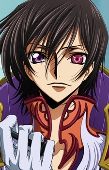
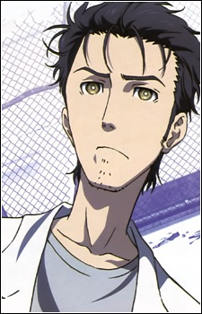

10 List Favorite Anime Character On 2022.
| 1. |
 |
Lelouch Lamperough- Anime : Code Geass
- Age : 17 (first season), 18 (second season)
- Date of Birth : December 5, 1999 a.t.b. (Sagittarius)
- Blood Type : A
- Nationality : Britannian
- Height : 178 cm (5'10")
- Weight : 56 kg (123 lbs)
- Occupation : Student, Terrorist, Knightmare Pilot, Politician, Emperor, Prince
- Allegiance : Order of the Black Knights
- Position : Leader of the Black Knights
- Knightmare : Sutherland, Burai, Gawain, Shinkirou
|
| 2. |
 |
Levi Ackerman- Anime : Attack On Titan
- Date of Birth: December 25
- Height: 160 cm (5'3")
- Weight : 56 kg (123 lbs)
- Affiliations: Scouting Legion, Special Operations Squad
|
| 3. |
 |
Monkey D. Luffy- Anime : One Piece
- Age: 17; 19
- Date of Birth : May 5, Taurus
- Blood Type : F
- Nationality : Britannian
- Height: 172 cm; 174 cm
- Weight : 56 kg (123 lbs)
- Affiliation: Straw Hat Pirates
- Position: Captain
- Devil fruit: Gomu Gomu no Mi (Gum Gum Fruit)
- Type: Paramecia
|
| 4. |
 |
L- Anime : Death Note
- Birthday: October 31, 1979 (1982 in anime)
- Zodiac sign: Scorpio
- Height: 179 cm (5'10")
- Weight: 50 kg (110 lbs.)
- Likes: sweets
- Dislikes: Wearing socks
|
| 5. |
 |
Roronoa Zoro- Anime : One Piece
- Birthday: November 11
- Zodiac sign: Scorpio
- Height: 178 cm (5'10") , 181 (5'11") (after timeskip)
- Affiliation: Straw Hat Pirates
- Position: Swordsman
|
| 6. |
 |
Light Yagami- Anime : Death Note
- Birthday:February 28, 1986 (1989 in the anime)
- Zodiac sign: Pisces
- Hair color: Brown
- Eye color: Brown
- Height: 179 cm (5'10")
- Weight: 64.1 kg (141 lbs.)
- Blood type: A
- Occupation: high school student, a university student, detective
- Likes: Justice
- Dislikes: Evil
|
| 7. |
 |
Killua Zoldyck- Anime : Hunter X Hunter
- Age: 12 (Beginning), 14-15 (Current)
- Birthday: July 7th (2011), June 15th (1999)
- Height: 158 cm
- Weight: 45 kg
- Eye Color: Blue
- Blood Type: A
- Occupation: Assassin (Formerly), Hunter
- Nen Type: Transmutation
- Equipment: Skateboard, Yo-Yos
|
| 8. |
 |
Rintorou Okabe- Anime : Steins Gate
- Birthdate: December 14, 1991 (Sagittarius)
- Height: 177 cm (5'10")
- Weight: 59kg
- Blood Type: A
- Occupation: Assassin (Formerly), Hunter
- Affiliations: Future Gadget Lab
|
| 9. |
 |
Elric Edward- Anime : Fullmetal Alchemist
- Age: 15-16 (series), 18 (movie, end of the series)
- Birthdate: 1899
- Birthplace: Resembool, Amestris
- Species: Human
- Abilities: Alchemy, Martial Arts
- Weapon: Alchemy, Automail arm and leg
- Occupation: State Alchemis
- Affiliations: State Military
|
| 10. |
 |
Uzumaki Naruto- Anime : Naruto Shippuden
- Age: 12-13 (Naruto part I), 15-17 (part II), 19 (The Last: Naruto the Movie), 27 (Naruto epilogue), 32 (Boruto: Naruto the Movie)
- Height: 145–147 cm (I), 166 cm (II), 174 cm (The Last: Naruto the Movie), 180 cm (Boruto: Naruto the Movie)
- Weight: 41–44 kg (I), 52 kg (II), 56 kg (The Last: Naruto the Movie), 66 kg (Boruto: Naruto the Movie)
- Blood type: B
- Favorite food: Ichiraku ramen
|